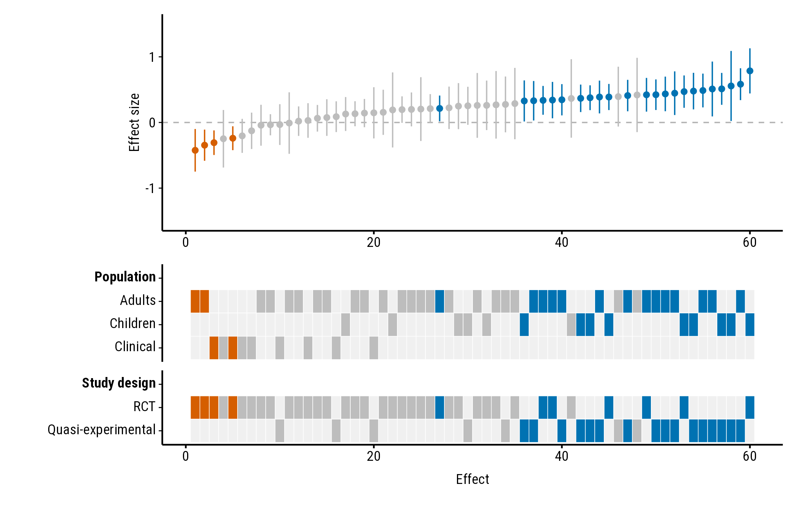
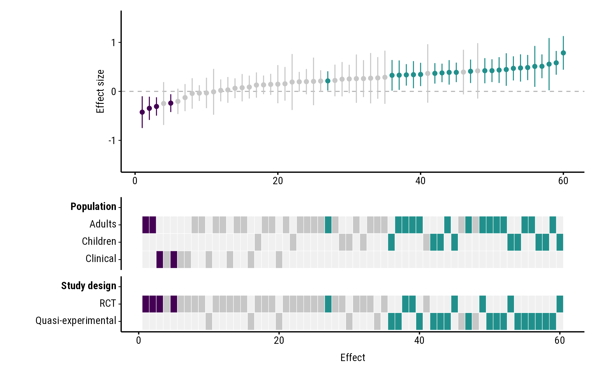
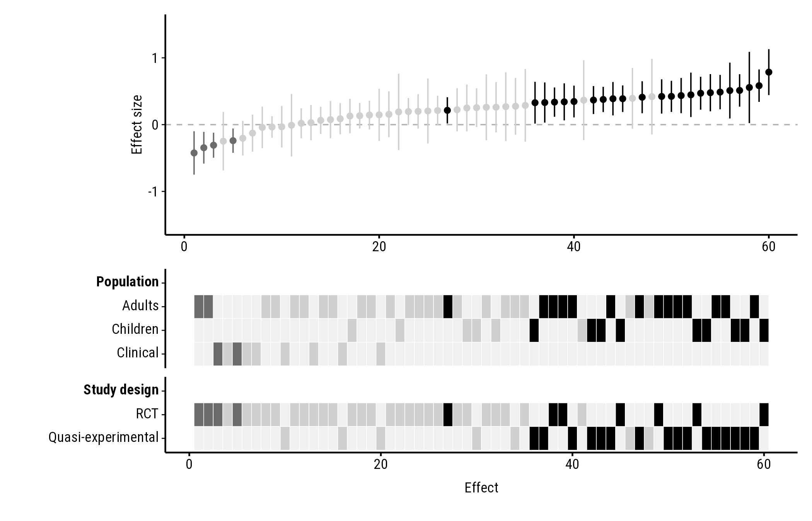
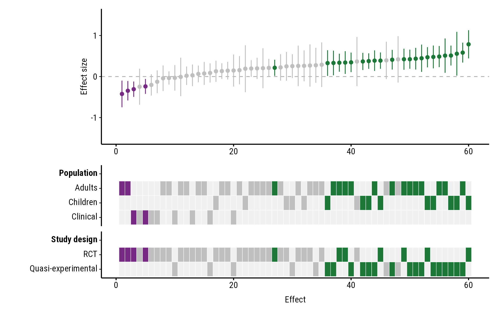
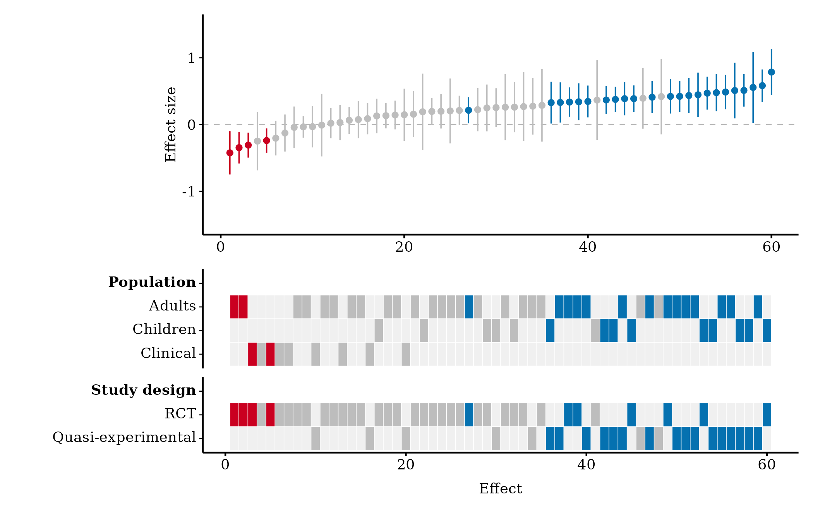
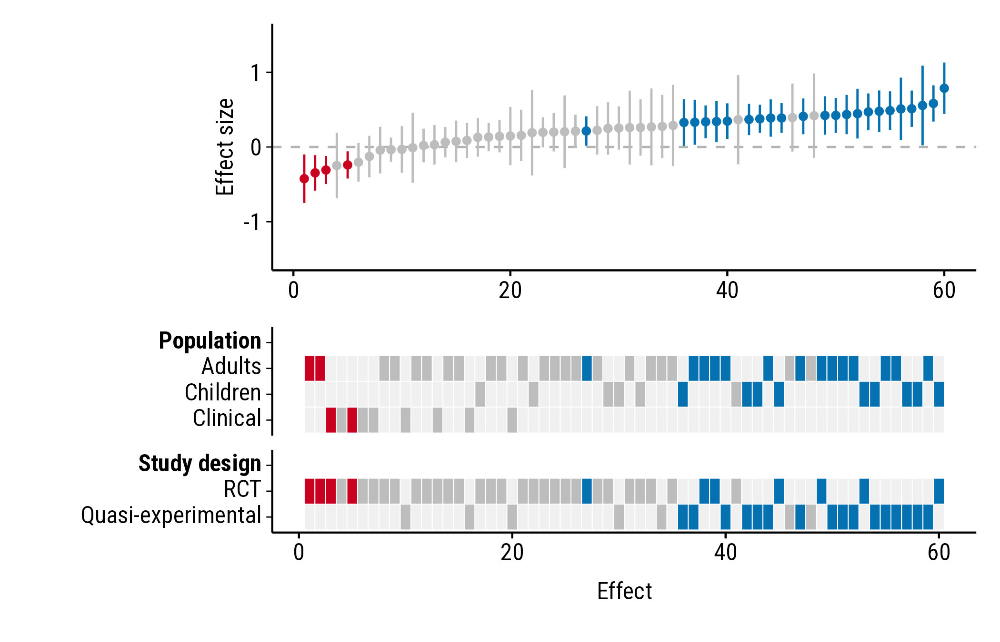
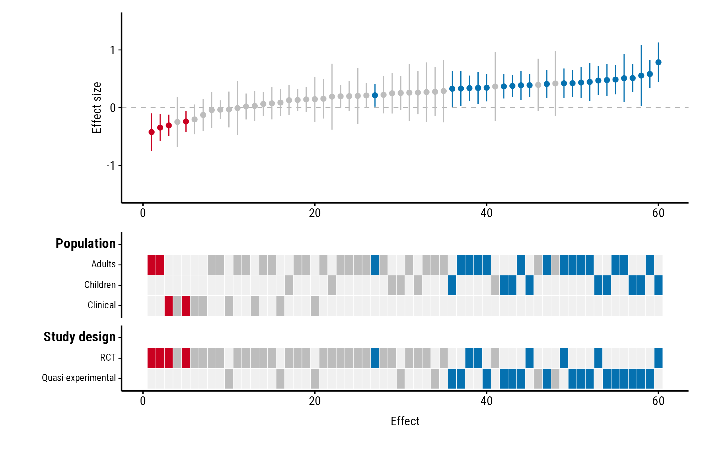
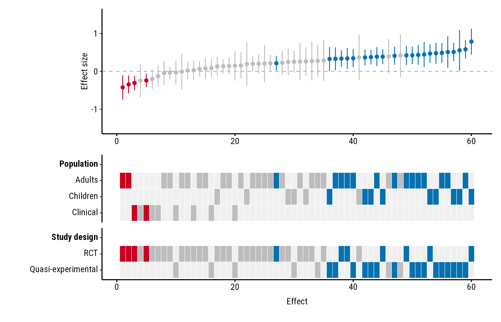

How to change the colours, font, text size and the height of each
panel. All the examples use the forestmap_example data that
comes with the package.
Colours
Built-in palettes
Choose a palette by name. The options are "default"
(blue, red and grey, used everywhere else in these guides),
"okabe_ito", "viridis" and
"greyscale".
"okabe_ito" uses blue and vermillion from the Okabe–Ito
palette, designed to stay distinguishable for people with common types
of colour blindness:
plot_forestmap(
forestmap_example, "smd", vi = "vi",
moderators = c("Population" = "population", "Study design" = "design"),
palette = "okabe_ito"
)
"viridis":
plot_forestmap(
forestmap_example, "smd", vi = "vi",
moderators = c("Population" = "population", "Study design" = "design"),
palette = "viridis"
)
"greyscale", for black-and-white printing:
plot_forestmap(
forestmap_example, "smd", vi = "vi",
moderators = c("Population" = "population", "Study design" = "design"),
palette = "greyscale"
)
Your own colours
Give three colours: for positive effects, negative effects, and effects whose interval includes the null value. Any colour name or hex code works:
plot_forestmap(
forestmap_example, "smd", vi = "vi",
moderators = c("Population" = "population", "Study design" = "design"),
palette = c(positive = "#1b7837", negative = "#762a83", null = "grey75")
)
Font and text size
Font
font takes the name of any font installed on your
computer. The default, "Roboto Condensed", comes with
forestmap, so it works everywhere; so do the generic names
"sans", "serif" and "mono":
plot_forestmap(
forestmap_example, "smd", vi = "vi",
moderators = c("Population" = "population", "Study design" = "design"),
font = "serif"
)
To see which fonts you have, run
systemfonts::system_fonts()$family. You can also use a font
file that isn’t installed, by giving its path:
plot_forestmap(
forestmap_example, "smd", vi = "vi",
moderators = c("Population" = "population", "Study design" = "design"),
font = "fonts/MyFont-Regular.ttf"
)Text size
text_size sets the size of all text, in points (default
9):
plot_forestmap(
forestmap_example, "smd", vi = "vi",
moderators = c("Population" = "population", "Study design" = "design"),
text_size = 12
)
Label sizes
label_size sets the size of each kind of label
separately, in points: level for the levels,
moderator for property names, and study for
study names in the vertical layout. Any you
leave out follow text_size. Smaller level labels help when
a property has many levels:
plot_forestmap(
forestmap_example, "smd", vi = "vi",
moderators = c("Population" = "population", "Study design" = "design"),
label_size = c(level = 7, moderator = 10)
)
Panel heights
By default, the heatmap gets more of the plot’s height the more rows
it has. forest_height sets the forest plot’s share of the
height yourself, between 0 and 1. Here the forest plot and heatmap get
half each:
plot_forestmap(
forestmap_example, "smd", vi = "vi",
moderators = c("Population" = "population", "Study design" = "design"),
forest_height = 0.5
)